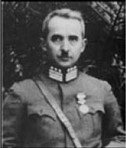

LXXI
Mustafa Kemal deneyini özenle hazırladı. Türklerin siyasal anlayışını, halkına olan inancının doğruluğunu ilk kez gerçek anlamda sınayacaktı.
Çoğu kişi, özellikle yabancılar, halkın yalnızca kendi seçtiği adaylara oy vermek zorunda olması nedeniyle, son altı yıldır yapılan seçimlere gülüp geçiyordu.
Kendisi de bu seçimleri, seçmenlerin oy verme alışkanlığı edinebilmeleri için bir tür alıştırma olarak görüyordu. Bu seçimler, halkın kendi sorumluluklarını üstlenmesi gereken zaman geldiğinde, kendi temsilcilerini seçme ve kendi kendisini yönetme hazırlığı idi.
Serbest Cumhuriyet Fırkası’nı Meclis’teki tanınmış mebuslara kurdurdu ve başkanı olarak da Fethi’yi seçti. Halkın bu partiye katılmasını istediğinin bilinmesini sağladı. Kız kardeşi Makbule ile yakınlarından üçü bu partinin ilk üyeleri oldu.
İngiliz sistemini inceledi ve uygun buldu. Fethi ve İsmet ile birlikte partilerinin ileri gelenlerine ayrıntılar hakkında dersler verdi; Meclis’te ve bütün ülkeyi dolaşarak yapacakları siyasal toplantılarda, her iki parti birbirlerine hücum etmeliydi; mesai saatleri dışında dostluklarını sürdürmeliydiler; Meclis’te Fethi, İsmet’e istediği kadar sövüp sayabilirdi ve İsmet de ona aynı şiddetle cevap verebilirdi; dışarıda dostça birlikte yemek yemeliydiler; her ikisi de Türkiye’nin iyiliği için çalışıyorlardı.
Sonunda hazır olunca, denemenin İzmir’de başlatılmasını emretti. Fethi konuşma yapmak için oraya gitti.
Program hazırlandığı gibi yürümedi. Yerel güvenlik görevlileri, toplanmışş olan kalabalığı dağıttı, Fethi’nin yandaşlarını tutukladı ve kendisine de toplantı yapma izni vermedi.
Ertesi gün, İsmet ve durumu denetlemek üzere Gazi de İzmir’e gittiler. Gazi, Fethi’ye bütün imkânların sağlanması için emirler verdi, toplantıya dinleyicilerin katılımını sağladı, hatta alkışlanması için şakşakçılar bile tuttu.
Kent halkı ve memurlar şaşkınlık içindeydiler. Bu, onların bütün deneyimlerinden farklı bir şeydi. Hiçbir hükümet bir muhalefete izin vermemişti; muhalefetin teşvik edildiği daha önce kesinlikle görülmemişti; muhalefeti susturmak memurların göreviydi, halk hükümeti onaylamasa bile susmak zorundaydı; bu yenilik, yalnızca hükümetin sonunu hazırlamak anlamına gelebilirdi.
Bazı çirkin gösteriler oldu. Gazete idarehaneleri taşlandı ve yakıldı. Pek çok gösterici dövüldü, pek çoğu tutuklandı, bir tanesi de vuruldu. Polis ve memurlardan her iki tarafı da gözetmeleri isteniyordu. Bütün bunlar, siyasete ilişkin sahip oldukları düşüncelere kesinlikle tersti.
İkinci adım, Ankara’daki Meclis’te atıldı. Sahne yine özenle hazırlanmıştı. Bu, parlamenter bir hükümetin nasıl işleyeceğini gösteren bir derse benzemeliydi. Başkanlık kürsüsünde “Başöğretmen” olarak olayı idare eden Mustafa Kemal oturuyordu.
Serbest Fırkacılar, Fethi’nin önderliğinde hükümete şiddetle hücum ettiler. Altı yıldır ülkeyi Halk Fırkası yönetiyordu. Sonuç, ekonomik ve mali çöküntü nedeniyle tam bir felaketti; ülkenin gelirinden çok daha fazlasını işe yaramaz yollara, gereksiz demiryollarına ve belediye parkları gibi pahalı oyuncaklara harcamışlardı. Kişisel mali çıkarları için, devlet tekelleri yaratmışlardı; ihracat tamamen durmuştu; Türk Lirası piyasada değer kaybetmekteydi. Sermayeye ihtiyaç vardı, ama kimseye güven veremedikleri için, sermaye de bulamıyorlardı; yabancı karşıtı görüşleri yüzünden, bu durumun sorumlusu İsmet’ti. Katı siyasası, sürekli yaptığı hatalar nedeniyle, İsmet bütün ülke genelinde yaygınlaşan bu bunalım ve hoşnutsuzluğun tek nedeniydi; ülkeyi batağa sürükleyen İsmet ve hükümetinin kendilerinden menkul yanılmazlığı ve cehaleti olmuştu.
İsmet aynı hararetle iddialara cevap verdi. Mecus’taki çekişme gittikçe kızışıyordu. Halk Fırkası yıllardır eleştirilmemişti. Buna karşı koydu. Hakaretler edildi. Tehditler savruldu. Kel Ali ayağa fırladı.
“Hıyanet-i Vataniye anlamına gelen bu sözleri dinleyecek miyiz?” diye haykırdı. Fethi’yi işaret ederek, “İşte Mondros Mütarekesi’ni imzalayan adam,” dedi ve bu kez İsmet’i göstererek devam etti, “Ve işte Lozan Antlaşması’nı imzalayan adam. Bu iradesiz vatan haini ile bu yurtsever arasında bir seçim yapmak söz konusu olabilir mi? Fethi başvekilken Kürtler ayaklandı. Ayaklanmayı İsmet bastırdı.”
Mustafa Kemal’in gözetimi altında hem İsmet hem de Fethi kendilerine düşen rolleri hayranlık uyandıracak bir başarıyla oynuyorlardı. Meclis’ten kol kola, konuşup gülüşerek çıkıyorlardı.
Fakat aldıkları talimatları, Gazi’nin titiz tembihlerini tamamen göz ardı eden taraftarları, yukarıdaki kürsüden onları izlediğini unutarak yumruk yumruğa geldiler. Tabancalar çekildi; kavgalar edildi; mebusları dostlarıyla dinleyiciler ayırmak zorunda kaldı; hâlâ öfkeli oldukları halde bağıra çağıra, münakaşalarını sürdürmek üzere kahvelere ve lokantalara koşuştular.
Aşağısındaki bu kızgın velveleyi denetleyemez ve etkileyemez bir durumda başkanlık kürsüsünden seyrederken Mustafa Kemal, bunun ne istediği ne de beklediği sonuç olmadığını fark etmişti.
Meclis’teki kargaşa dışarıda nelerin olabileceğinin bir göstergesiydi.
Genel seçimler yaklaşmıştı. Hükümet, on yıldır basın üzerinde sıkı bir sansür uygulamış, konuşma özgürlüğünü de bütünüyle kısıtlamıştı. Mustafa Kemal, yeni partiyi kurmak için her ikisini de kaldırdı ve bu seçimlerde seçmenlerin istedikleri adaylara oy vermekte özgür bırakılmalarına ilişkin emirler verdi.

İsmet İnönü
Sanki kaynayan bir kazanı devirmişti. Başlangıçta birkaç mırıltı duyuldu; bir iki gazete cesur birkaç makale yayınlama riskine girdi; bir iki konuşmacı hükümeti eleştirmeye cesaret etti. Polis hiçbir eyleme girişmeyince, mırıltılar homurtulara dönüştü, homurtularsa büyük bir yakınma kükremesine.
Boyutları ve şiddetiyle Mustafa Kemal’i şaşırtan yakınmalar, ülkenin her kesiminden ve her sınıftan adeta çağıldadı. Ağzı tıkalı olan Türk halkı, on yıldır sessiz ve itaatkâr oturmuştu. Ama artık dili çözülmüştü. Bu, sonunda hoşnutsuzluğunu dile getirebilen ulusun kükreyişiydi. Bazı yerlerde denetim altına girmeyen bir şiddetle patlak veriyordu.
Tüccarlar ve esnaf yakınmaktaydı: Hiç sermaye ve kredi yoktu ve İsmet ile onun sekter siyasası iktidarda kaldığı sürece olmayacaktı da sonuçları düşünülmeden ansızın konan vergiler kârlarını yiyip bitirerek ticareti tehlikeye sokmuştu; memurlar eskisi kadar yiyiciydi; eskiden hiç değilse kime rüşvet verileceği bilinirdi, artık bütün memurlara vermek gerekiyordu; düşüncesiz ve ahmakça hazırlanmış yasalarla ve hükümetin ticarete daha da sinir bozucu nitelikteki müdahaleleriyle nasıl başa çıkabilirlerdi ki tümüyle iflasa uğramışlardı.
Armatörlerin, ihracatçıların, yükleme-boşaltma şirketlerinin ve mavnacıların da benzer şikâyetleri vardı. Limanlar için kötü planlanmış düzenlemeler onları iflas ettiriyordu; gümrük ve pasaport memurları kırtasiyeci ve yiyiciydi; bütün bu hırsızlıklar, belirsizlikler, güçlükler ve sürekli değişen yasalar yüzünden hiçbir gemi Türk limanlarına uğramaz olmuştu. Bütün gemiler Atina’ya gidiyorlardı. İstanbul, İzmir, Trabzon gibi bir zamanlar son derece işlek ve gelişkin olan bütün limanlar şimdi bomboştu; ticaret tamamen durgunluk içindeydi.
Bankalar ve büyük ticarethaneler de uyarı sinyalleri veriyordu. Hükümetin tutumu onları iflasa sürüklüyordu; çok müsrifti; ulusal gelir düşmekteydi; gelirin üçte birinden fazlası savunmaya harcanıyor, en çok gözetilmesi gereken şey olan ülke çapındaki yeniden teşkilatlanma zorunluluğu ihmal ediliyordu; sermaye hayati bir gereksinmeydi. Ancak dışardan sağlanabilirdi; İsmet yabancı borçlara sırt çevirdiği sürece, ticari bir canlanma için hiç şans yoktu; yabancı karşıtı duygularını göstermeye ve eski borçları ödemeyi reddetmeye devam ettiği sürece, hiçbir dış sermayedar Türkiye’ye güven duymayacaktı.
Hükümet memurları arasında da derin bir hoşnutsuzluk vardı: Maaşları az, ödemeler düzensizdi; geçim koşulları eskisine göre iki kat ağırlaşmıştı; Avrupa standartlarında yaşamaları ve giyinmelerinin yanı sıra dürüst olmaları da bekleniyordu; ancak, düşük maaşlarını destekleyebilecek ek işlerde çalışmaları yasaklanmıştı; bütün bunlar çok mantıksızdı.
Çiftçiler ve köylülerin yakınmaları daha da acıydı; kendilerine ödünç para, tohum, yol, makine ve sulama vaat edilmişti, hiçbirini alamamışlardı; üç yıllık kuraklık onları mahvetmişti, hükümet yardım etmemişti; aslında vergiler eskisinden de ağır, vergi memurları eskiden olduğundan daha aç gözlü ve hoyrattı; kuraklığa karşı hiçbir birikimleri olmadan hayvanlardan biraz daha iyi yaşayarak açlıktan ölme sınırında mücadele ederken, bütün bu yeni düşüncelerin, Cumhuriyet, yeni giysiler, yeni vakit geçirme yolları, yeni konuşma ve yazma yolları, onlara ne faydası oluyordu? Tarlaları boştu; toprakları ıssızdı; yeni fikirler değil, yiyecek istiyorlardı.
Yakınmaya her sınıftan kadınlar da katıldı. Yiyecek, giyecek, yakacak, kira, hepsi çok pahalıydı ve ellerine artık daha az para geçiyordu; Cumhuriyet onlara özgürlüklerini vermişti; özgürlük açlıktan ölmek demekse, özgürlüğün ne yararı vardı? Durumları Padişah’ın zamanında olduğundan çok daha kötüydü. Mustafa Kemal’in denemesini hayata geçiren ılımlı, halim selim, mülayim Fethi’nin ardında ticaretin durgunlaşmasından ve tarımın mahvolmasından yakınan ve Mustafa Kemal’in reformlarına şaşırıp kalarak karşı koyan binlerce hoşnutsuz unsurdan oluşan bir kitle toplandı. Bunlara eski rejime ve Padişah’a özlem duyan din adamları ve dervişler, İttihat ve Terakki Cemiyeti’nin kalıntıları ve Mustafa Kemal’in 1926’da ezdiği muhalefetin paçayı kurtarabilmiş unsurları da katıldı.
Bütün ülke yeni ve tehlikeli bir ruhla ayağa kalkmıştı. Bütün yakınmalara karşın, o zamana değin herkeste Gazi başta olduğu sürece her şeyin düzeleceğine ilişkin genel bir inanç ve gözü kapalı bir iman egemen olmuştu.
Yakınma ve eleştiri kükreyişi, ulusun kitle psikolojisini etkilemekteydi. Gazi’ye olan bu iman, bu körü körüne yerleşik inanç, yok olmaya başlıyordu. Bu yok olursa, onunla birlikte Türkiye Cumhuriyeti’nin istikrarı da gidecekti. Bu inanç, üzerine geleceğin inşa edildiği temeldi.
Gazeteler İsmet ve adamlarına yönelik kişisel hakaret kampanyasına başladılar. Mustafa Kemal’in adı tenis topu gibi oradan oraya fırlatılıyordu; artık kutsal bir figür olmaktan çıkmıştı. Ona karşı ihtiraslı politikacılar ya da devrimciler değil, hoşnutsuz vatandaşlar tarafından birçok suikast planları yapılmaya başlamıştı.
Pek çok yerde ciddi sorunlar baş gösterdi. İzmir’de komünistlerce örgütlenen incir işçileri grevini genel bir ayaklanma izledi. Fransız sınırında, güneyde Ermeni devrimcilerin parmağı olan ve silahlı Kürtlerin de yardım ettiği bir ayaklanma çıkmıştı. Bütün İran sınırı boyunca Kürtler yine yakıp yıkıp öldürerek başkaldırmalardı. Salih Paşa’nın kumandasındaki on beş bin kişilik Türk kuvvetleri onları köşeye sıkıştırıp ezmenin çok güç olduğu kanısındaydılar.
Birçok yerde Türk köylüleri vergilerini ödememişler, vergi memurlarını tartaklayarak köylerinden kovmuşlardı. İttihat ve Terakki Cemiyeti şubeleri ve eski muhalefet yeraltında örgütlenmeye başlamıştı. Din adamları ve tarikatlar eski rejime dönmek için çalışmalar yapıyorlardı. Polisler, askerler, jandarmalar ve kamu hizmeti çalışanları arasında da hoşnutsuzluk ve sadakatsizlik yaygındı.
Son olarak, tehlike Menemen kasabası çevresinde çok ciddi bir ayaklanma şeklinde uyarı sinyali verdi:
Menemen, İzmir’in gerisindeki zengin topraklardaydı. 1930 Aralık ayının sonlarında, Derviş Mehmet namında bir şeyh, kendisinin Türkiye’yi Mustafa Kemal ve cumhuriyetinin kara dinsizliğinden kurtarmak üzere yeryüzüne gelen Mehdi olduğunu ilan etti.
Menemen’in çarşısında vaaz vermeye başladı ve büyük bir kitle onu dinlemek için oraya akın etti. Kubilay adında bir subay oradan geçiyorken, konuşmaya müdahale etmeye çalıştı. Şeyh ona kendi işine bakmasını söyledi. Şeyhi üstüne çıktığı platformdan indirmeye kalkıştı. Müritlerinin yardımıyla şeyh, kendisini seyreden bütün kasaba halkının alkışları arasında onu kıskıvrak yakalayıp kör bir tırpanla ağır ağır keserek başını gövdesinden ayırdı.
Vali, polisi harekete geçirdi: Kalabalık onları kovaladı. Jandarmayı çağırttı, ama onlar da çok zayıftı. 4. Süvari alayının birliklerini çağırttı: Askerler halka ateş açmayı reddettiler.
Kuru otların tutuşmasına benzer bir hızla ayaklanma çabucak yayıldı. Dervişler aylardır her yerde taraftar toplamak için çalışmışlardı. Din adamlarıyla dervişlerin önderliğinde Konya’dan Antalya’ya, İzmir ve Bursa’ya dek yayılan geniş bir bölgede, köylüler hükümet memurlarını kovdular. Kadınlar isyancıları alkışladılar. Erzurum ve Sivas’tan isyanın oralarda da patlayacağını gösteren işaretler olduğuna dair haberler gelmekteydi.
Kürtler vahşice savaşıyorlardı; “Körebe Divân-ı Harbi” diye bir mahkeme icat etmişlerdi: Yakaladıkları bütün Türkleri bu mahkemede alelacele yargılıyor ve vahşice kesiyorlardı.
Türkiye ve Cumhuriyet tehlikedeydi.